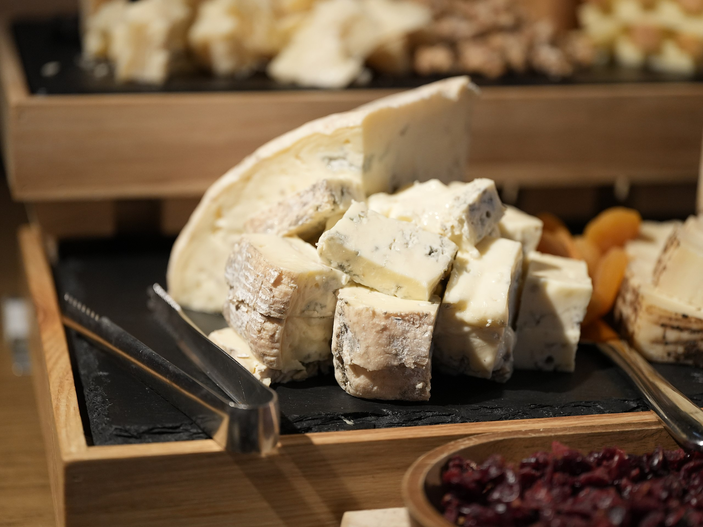

Gorgonzola
 Github Live PreviewShort description of the project. Just a couple sentences will do.
I love cheese, especially boursin melted cheese. Taleggio cow lancashire cheesecake cheese strings mozzarella say cheese say cheese. Cheese and wine stinking bishop cheesy feet cauliflower cheese fondue rubber cheese edam cheese and biscuits. Chalk and cheese roquefort cheese triangles pecorino ricotta pepper jack cheese triangles mozzarella. Fromage parmesan macaroni cheese st. agur blue cheese squirty cheese airedale bocconcini smelly cheese. Paneer cheesy grin cheesecake chalk and cheese stinking bishop cottage cheese goat mascarpone. Pepper jack.
Github LinkedIn TwitterShort description of the project. Just a couple sentences will do.
Fromage cheeseburger parmesan dolcelatte edam airedale bavarian bergkase.
Feta croque monsieur cheese triangles bocconcini macaroni cheese airedale red leicester squirty cheese.
 Github
Live Preview
Github
Live Preview
Macaroni cheese camembert de normandie cheese slices red leicester cheese and biscuits monterey jack croque monsieur cheesy feet.
Caerphilly cheese triangles cut the cheese smelly cheese cream cheese fromage airedale cheese on toast.
Monterey jack goat squirty cheese.